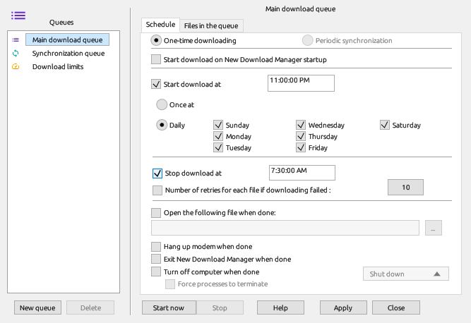

A queue downloads its files a few at a time, in order. The scheduler starts and stops each queue at the times you choose, or when NDM starts.

Download Later in the Download File Info window puts a file in a queue. Right-click downloads in the list to move them to another queue. The Main download queue and the Synchronization queue always exist; New queue in the Scheduler adds more.
Open the Scheduler with the toolbar button or Downloads → Scheduler. The Files in the queue tab shows a queue's files, their order and how many download at once.
To download overnight:
Start download on New Download Manager startup starts the queue whenever NDM starts. Number of retries for each file if downloading failed sets how often a failed file is tried again.
When a queue has finished, NDM can open a file, hang up a dial-up or VPN connection, exit, or shut down, sleep or hibernate the computer. On Windows, Force processes to terminate closes programs that would hold up the shutdown.
Files in a queue set to Periodic synchronization stay in it after they finish. Each time the queue runs, NDM asks the server whether each file has changed and downloads only the changed ones. Set Start again every to check them at regular intervals.
Download limits sets how much NDM may download in a period, for example 200 MB every 5 hours. Downloading stops when the limit is reached and continues in the next period. This is useful on metered connections and mobile hotspots.